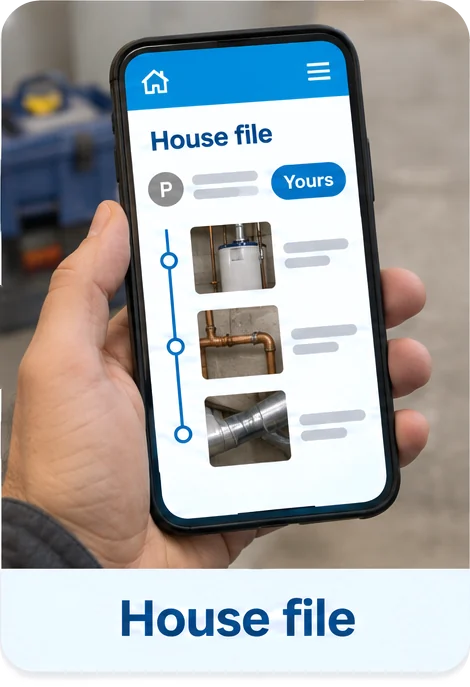

House Proof File




- Problem
- When the insurer, the city or a buyer asks what was fixed, I have no proof of how the house looked before.
- Who has it
- Homeowners, and the providers who fix their houses.
- What people say
- “I’m getting water loss claims with maybe 22 photos total for a full tear-out down to the studs.” Public adjuster on Reddit, r/adjusters, 2026-10
 Open the post
Open the post